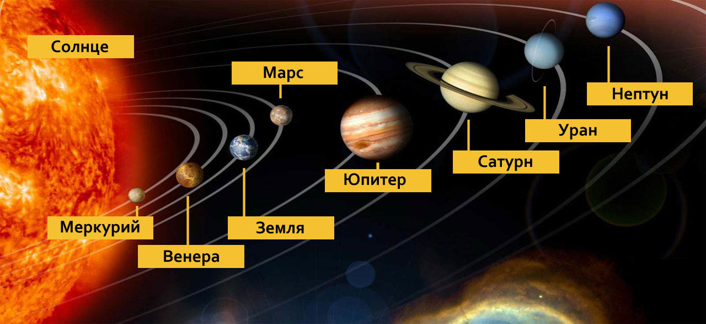
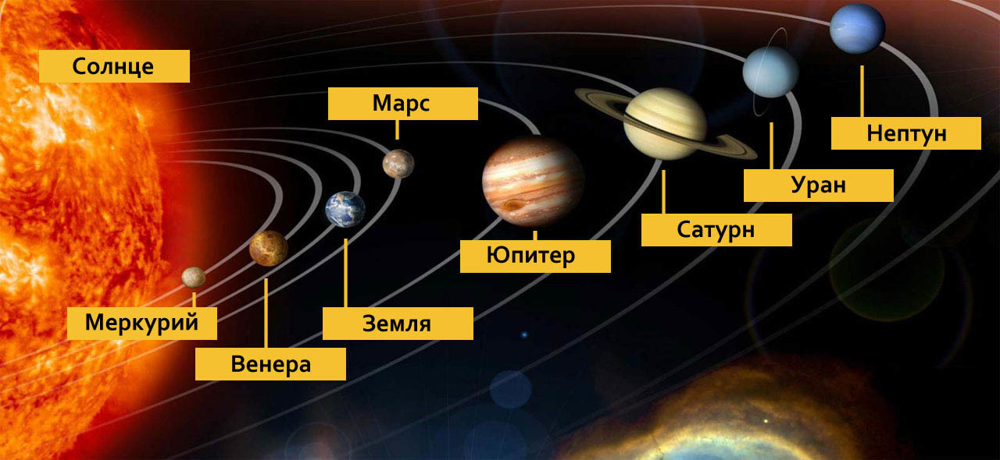

Солнечная система
 

Наведи порядок в солнечной системе

Венера
Меркурий
Юпитер
Сатурн

Земля
Марс

Нептун
Уран
Планеты солнечной системы
Земля — третья по удалённости от Солнца планета Солнечной системы. Самая плотная, пятая по диаметру и массе среди всех планет Солнечной системы и крупнейшая среди планет земной группы, в которую входят также Меркурий, Венера и Марс. Единственное известное человеку в настоящее время тело во Вселенной, населённое живыми организмами.
Меркурий — ближайшая к Солнцу планета Солнечной системы, наименьшая из планет земной группы. Названа в честь древнеримского бога торговли — быстрого Меркурия, поскольку она движется по небу быстрее других планет.
Венера — вторая по удалённости от Солнца и шестая по размеру планета Солнечной системы, наряду с Меркурием, Землёй и Марсом принадлежащая к семейству планет земной группы. Названа в честь древнеримской богини любви Венеры. По ряду характеристик — например, по массе и размерам — Венера считается «сестрой» Земли.
Марс — четвёртая по удалённости от Солнца и седьмая по размеру планета Солнечной системы; масса планеты составляет 10,7 % массы Земли. Названа в честь Марса — древнеримского бога войны, соответствующего древнегреческому Аресу
Юпитер — крупнейшая планета Солнечной системы, пятая по удалённости от Солнца. Наряду с Сатурном, Юпитер классифицируется как газовый гигант.
Сатурн — шестая планета по удалённости от Солнца и вторая по размерам планета в Солнечной системе после Юпитера. Сатурн классифицируется как газовая планета-гигант. Сатурн назван в честь римского бога земледелия
Уран — планета Солнечной системы, седьмая по удалённости от Солнца, третья по диаметру и четвёртая по массе. Была открыта в 1781 году английским астрономом Уильямом Гершелем и названа в честь греческого бога неба Урана. Уран стал первой планетой, обнаруженной в Новое время и при помощи телескопа
Нептун — восьмая и самая дальняя от Солнца планета Солнечной системы. Его масса превышает массу Земли в 17,2 раза и является третьей среди планет Солнечной системы, а по экваториальному диаметру Нептун занимает четвёртое место, превосходя Землю в 3,9 раза. Планета названа в честь Нептуна — римского бога морей
Первый полет в космос
12 апреля 1961 года состоялся первый полет человека в космос – его совершил Юрий Гагарин. Это историческое событие открыло путь для исследования космического пространства.
«Восток-1» — советский космический корабль из серии «Восток», первый в мире космический аппарат, поднявший на своём борту человека на околоземную орбиту. На корабле «Восток» 12 апреля 1961 года лётчик-космонавт СССР Юрий Алексеевич Гагарин совершил первый в мире пилотируемый полёт в космическое пространство.
Первый спутник
«Спу́тник-1» — первый в мире искусственный спутник Земли, советский космический аппарат, запущенный на орбиту 4 октября 1957 года. Кодовое обозначение спутника — «ПС-1».
Первые собаки
Лайка (1954 — 3 ноября 1957) — собака-космонавт, первое животное, выведенное на орбиту Земли. Была запущена в космос 3 ноября 1957 года в половине шестого утра по московскому времени на советском корабле «Спутник-2». На тот момент Лайке было около трёх лет. Но она не вернулась на Землю.
19 августа 1960 года был осуществлен успешный запуск космического корабля «Спутник-5». На борту корабля находились собаки Белка и Стрелка - советские собаки космонавты, первые животные, которые совершили орбитальный космический полёт и вернулись на Землю невредимыми.
Части света
Нажми на материк чтобы посмотреть допонительную информацию